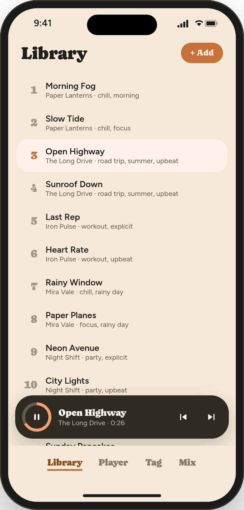
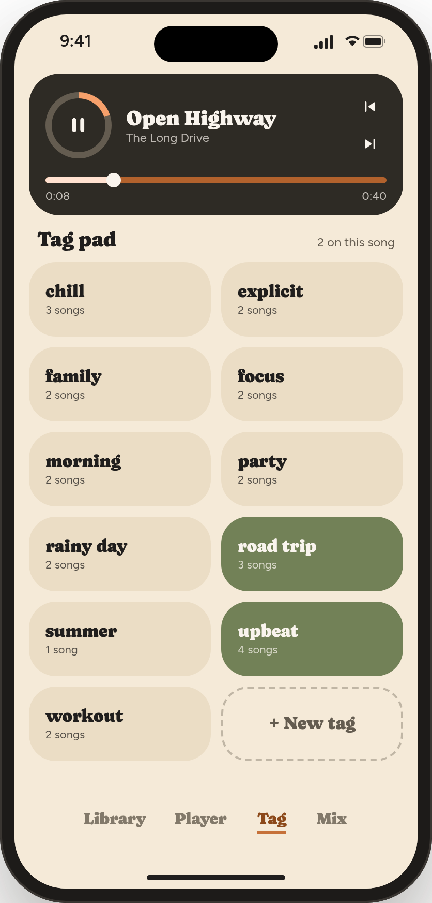
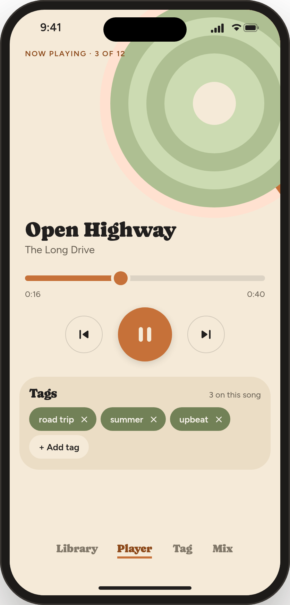
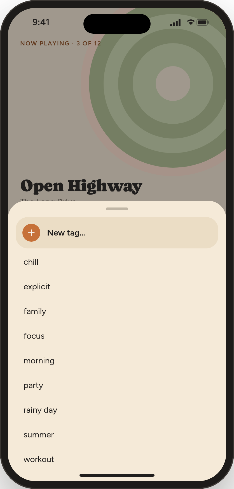
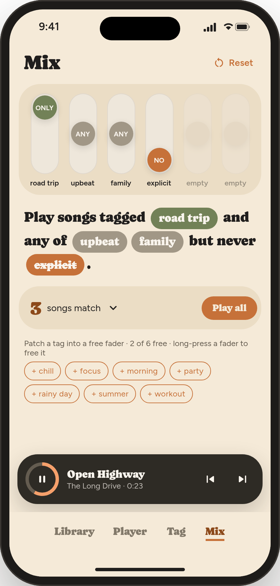
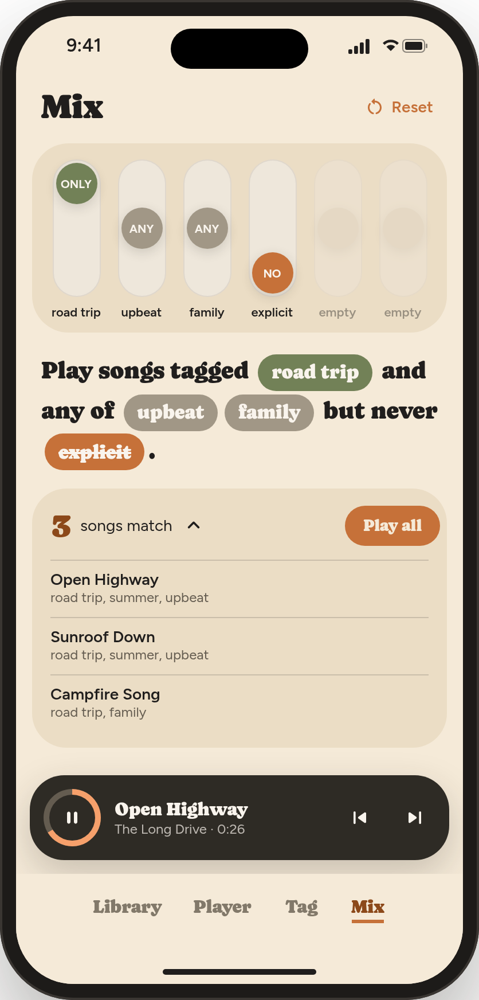

Instant Playlist
User guide. Instant Playlist plays the music you already own and builds playlists from tags you choose: moods, places, people, anything.
Start with the 34-second demo
The video shows the whole idea: tag a song while it plays, then mix tags into a playlist. This guide covers every step in detail.
Watch it at devank.dev/instant-playlist/guide/
The app in one minute
There are four tabs at the bottom of the screen:
| Library | All your songs. Add your music folder here. |
| Player | The song that's playing, with its tags. |
| Tag | The fastest way to tag: tap tags while the music plays. |
| Mix | Pick tags on six faders and play only the songs that match. |
Contents:
Quick start
Five steps from a fresh install to your first playlist:
- Put some music on your phone. On iPhone, open the Files app, go to On My iPhone → Instant Playlist, and copy in a few songs (or a whole folder). Or use any folder that's synced from your computer.
- Add the folder. In Library, tap + Add and choose that folder. Your songs appear in the list.
- Tag as you listen. Open Tag and tap Start tagging session. While each song plays, tap the tags that fit it. Use + New tag to make your first tags, like chill, workout or road trip.
- Mix. Open Mix, tap a tag under the faders to put it on one, and slide each fader to ONLY, ANY or NO.
- Play. Tap Play all. That's your instant playlist.
Adding your music
Instant Playlist plays music files that are on your device. It doesn't stream, and it doesn't need an account or the internet.
On iPhone
- Copy music into a folder. Either:
- The Files app: open Files → On My iPhone → Instant Playlist and copy audio files or folders in (from iCloud Drive, AirDrop, a USB drive or your computer).
- A synced folder: if you sync music from your computer with an app such as Syncthing, use that folder. Tags you add are written into the files, so they sync back to your computer too.
- In Library, tap + Add and choose the folder.
Instant Playlist finds every song inside that folder, including songs in folders inside it.
On a computer
+ Add offers two choices: Add a folder (new files added to it later are picked up automatically) or Add individual songs.
Good to know
- Formats: MP3, FLAC, M4A, AAC, WAV, OGG and Opus.
- Your folders are remembered. The library comes back each time you open the app.
- New or deleted songs in your folders are noticed when you come back to the app.
- Names: songs show the title and artist stored in the file. A song with no title shows its file name.
Library
The Library tab lists every song, numbered, with its artist and tags underneath.
- Tap a song to play it. The rest of the library plays after it, in order.
- Tap the playing song (highlighted) to pause or resume.
- + Add adds another folder.
While something plays, a dark mini player floats above the tabs on Library and Mix. Use it to pause or skip without leaving the screen you're on.

Tagging while you listen
The Tag tab is built for tagging a whole library without stopping the music. The playing song is at the top, and below it is the Tag pad: a big button for every tag you've made.
- If nothing is playing, tap Start tagging session. Your library starts playing from the first song.
- Tap a tag to put it on the playing song. It turns green. Tap it again to take it off.
- Make a new tag with + New tag (the dashed button at the end). Type the name and press Done. It's added to the playing song straight away.
- Skip to the next song with the next button on the dark card, or let it play to the end. Use the previous button to go back and fix the last one.
Each button shows how many songs have that tag. "2 on this song" above the pad tells you how many tags the playing song has.

The Player tab
The Player tab shows the playing song: its place in the queue ("Now playing · 3 of 12"), a progress bar you can drag to jump around, and play, previous and next.
Below that, the Tags card shows only this song's tags:
- Remove a tag: tap the × on it.
- Add a tag: tap + Add tag. A list of your other tags slides up. Tap one to add it, or tap New tag… to type a new one.
Use Player when you want to fix one song's tags. Use Tag when you're going through lots of songs.


Making a playlist with Mix
The Mix tab is a little mixing desk with six faders. Put a tag on a fader, then set the fader to decide what that tag does:
| Fader | Means |
|---|---|
| ONLY (top) | Every song must have this tag. |
| ANY (middle) | Songs need at least one of the tags set to ANY. |
| NO (bottom) | Songs with this tag are left out. |
All the faders work together. Under them, Mix reads your choices back as a sentence, so you can check it says what you mean.

Step by step
- Put tags on faders. Below the results, your unused tags are listed as + tag buttons. Tap one and it goes onto the next free fader, set to ANY.
- Set each fader. Tap the top, middle or bottom of a fader, or drag its knob. You can also tap a tag in the sentence to cycle it ANY → ONLY → NO.
- Check the matches. The big number shows how many songs match. Tap it to see the list. Tap a song in the list to play the matches starting from that song.
- Play. Tap Play all to play every match in order.
Example: a family road trip
Faders: road trip ONLY, upbeat and family ANY, explicit NO.
Mix reads: "Play songs tagged road trip and any of upbeat, family but never explicit."
So you get road-trip songs that are upbeat or family songs, with nothing explicit. In the demo library, that's 3 songs.
Freeing faders
- One fader: press and hold it. Its tag goes back to the + tag list.
- All faders: tap Reset at the top.
- When all six are in use, free one before adding another tag.

Playback controls
- Music keeps playing when you switch tabs, so you can tag, browse and mix at the same time.
- Mini player (Library and Mix tabs): play/pause, previous, next. The ring around the play button fills up as the song plays.
- Player tab: drag the progress bar to jump to any point in the song.
- Lock screen and headphones: pause, play and skip from your phone's lock screen and media controls.
- Order: songs play in list order. When the last one ends, playback stops.
Questions and fixes
My songs disappeared.
The folder was probably moved, renamed or deleted. Add it again with + Add. Your tags are safe because they're in the files.
I added songs to my folder but they're not in the library.
Switch to another app and back, or close and reopen Instant Playlist. It checks your folders when you return.
"Couldn't save tags to this file."
The app wasn't allowed to change that file, for example because it's read-only or in a folder the app can't write to. Copy the song into the Instant Playlist folder in Files, or into your synced folder, and add that folder.
A song shows a file name instead of a title.
The file has no title saved in it. Any tag editor on your computer can add one.
Play all is greyed out.
No songs match your faders. Move a fader from ONLY or NO back to ANY, or tap Reset.
Is my data collected?
No. Instant Playlist collects no data, has no account, and never connects to the internet. See the privacy policy.
Need help?
Visit devank.dev/instant-playlist for support and contact details.